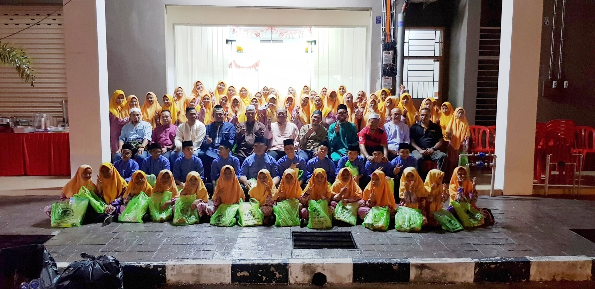
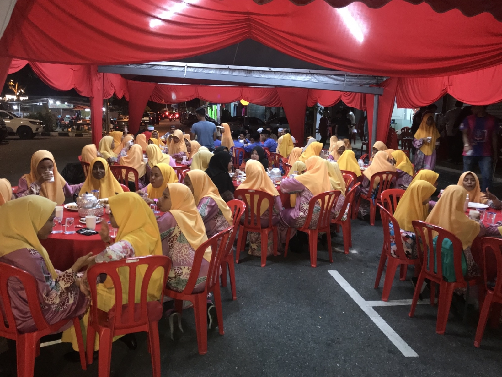
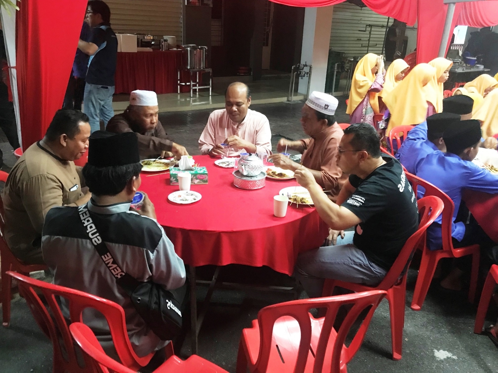
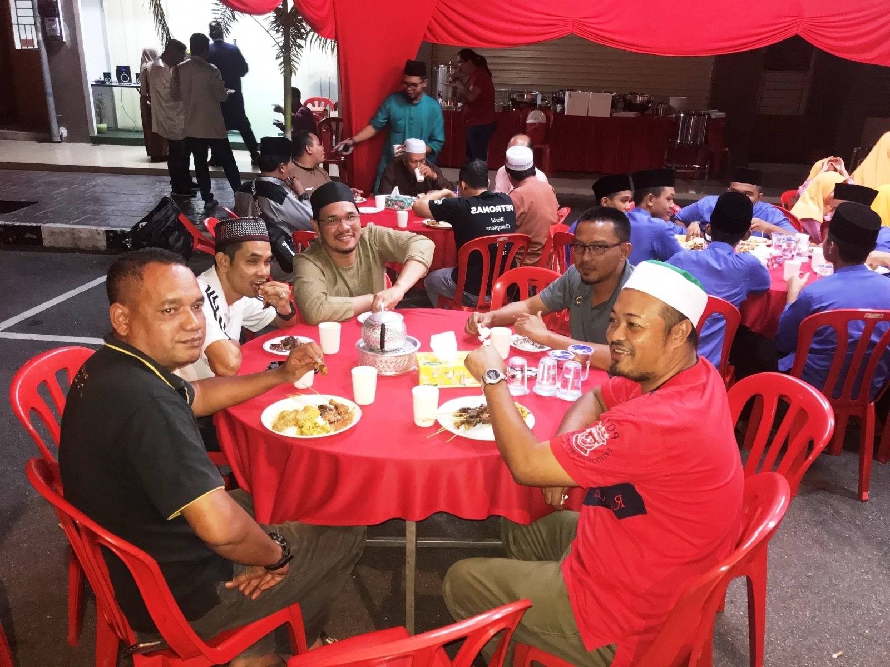
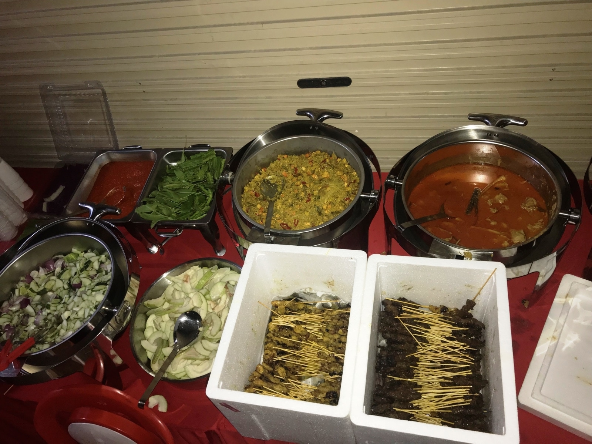
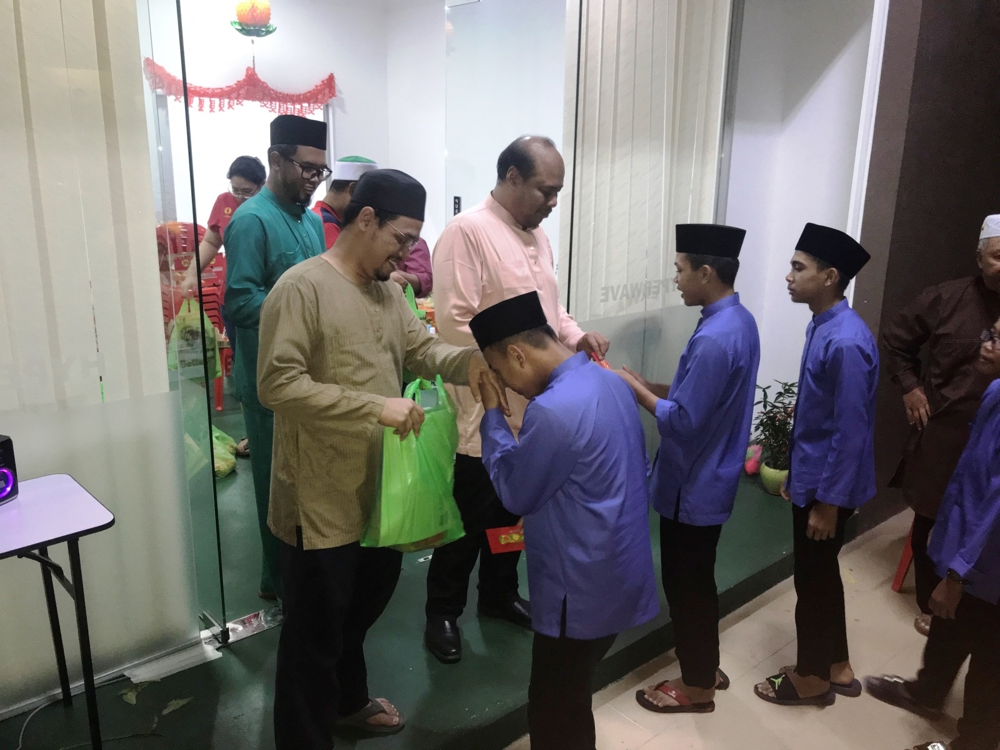
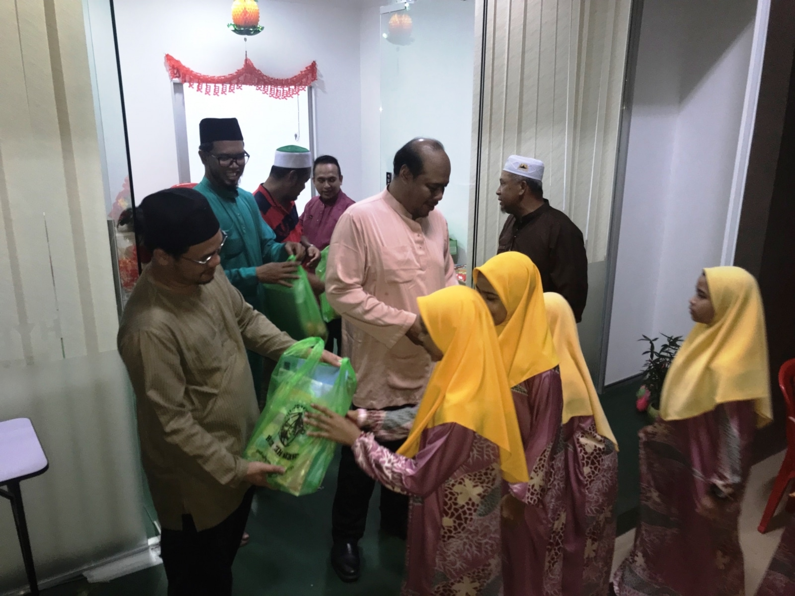
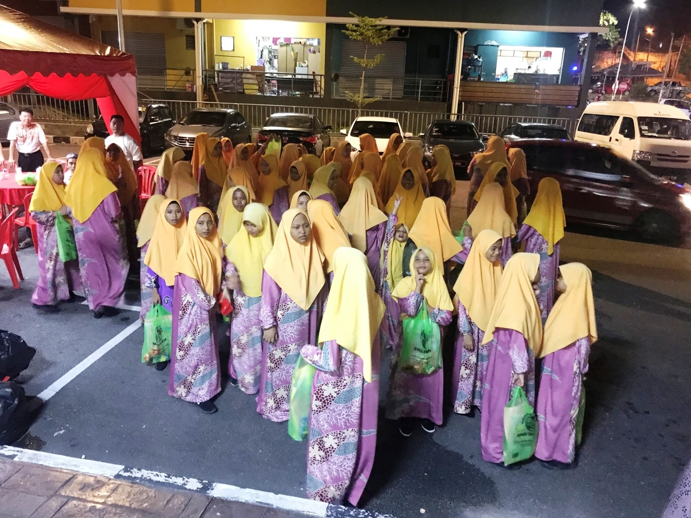

Rumah Anak Yatim dan Miskin Islam Paya Rumput Jawa (PAYASUM), Sg. Udang, Melaka ▼
In February 2019 HYPERWAVE organized a CSR activity at our Melaka Branch office with PAYASUM. PAYASUM which manages a total of 66 under privileged children is the oldest orphanage operating in the state of Melaka. HYPERWAVE donated basic necessity needs such as tables, items for laundry use (detergents, ironing boards and irons), kitchen cleaning supplies, household cleaning supplies and first aid medical supplies to support the continual operations of PAYASUM. A dinner get together was also organized at the Melaka Office and each child was given books and stationeries to encourage better learning at school.







